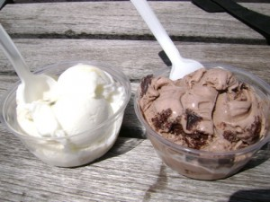

暑い夏の日の冷たいアイスクリーム＠YORKVILLEのSUMMERS
我が家の部屋の窓から、ある病院のエマージェンシー用の出入り口がよくみえる。病院のそばに住んでいるというと、救急車のサイレンの音うるさくない？と皆にきかれるけれど、病院に到着する直前にはもうサイレンを鳴らす必要はないせいか、おもったよりうるさくなかった。
それはある夏の日のこと、警察官やら救急救命士やら、病院の職員のひとたちがなにやら大勢でエマージェンシーの出入り口付近にたむろしている。なんだ？有名人か誰か総出でお出迎え？とおもい、よく目をこらしてみると、、、。
皆でアイスを食べていたのだった。救急車に紛れて、救急車と同じサイズの移動アイスクリーム屋が停まっていた。顔の表情まではみえないけれど、なんだか幸せそうなのどかな雰囲気。なるほど、だから、子供がいる住宅街でもないのにアイス屋のかける軽快な音楽が聞えることがあったのか。
さて、この夏、私とＪ次郎が試してみたアイス屋さん、SUMMERSはヨークビルにある。
店内で食べてももちろんいいんだけど、せっかくの気持ちのいい夏の日、外で過ごさなければもったいない。この店のあるYORKVILLE AVENUEは雰囲気もよく、居心地もいいので、私とＪ次郎は店の前の、停めてある自転車のそばにあるベンチに腰掛けた。アイスを楽しみ、夏を満喫。

Ｊ次郎はリッチなチョコレートブラウニー、私は夏らしい爽やかな甘さのパッションフルーツ。
通りを歩く人々が吸い込まれるように店に入っていき、そして、店をでてからはアイス片手にまたのんびりと歩き始める。今日のようなさわやかな夏の日は、アイス片手にぶらぶら散歩するのにぴったり。
ただ、残念だったのは、お店のひとに確認したところコーンにソイレシチンが使われていること。アイスやコーンを含め、素材にはこだわっているということをサイトでは謳っているので、久しぶりにアイスを大好きなコーンで食べられるかも？と期待していた私はがっかり。
確かにソイレシチンは天然の添加物ではあるけれど、せっかく店で手作りされたコーンを売りにしているのだから、大量生産品と同じことをしてしまうのはもったいないではないか。
今回は共同購入サイトのbuytopiaを使って、通常の半額という大変お得な値段でアイスが食べられた。
今日、そのbuytopia でダウンタウンにあるオーガニックのフローズンヨーグルトが期間限定でている。カナダ産のオーガニックミルクから作られたフローズンヨーグルトは２０１３年のベストフローズンヨーグルトに選ばれたそう。トッピング込みで、６ドル払って１２ドル分というのはとてもお得な値段、ということで、迷わず購入。そういえばＪ次郎の友だちおすすめしていたところだった。食べるのが楽しみ。トロントの短い夏が終わる前に食べに行こう。
＞＞＞buytopia （公式）